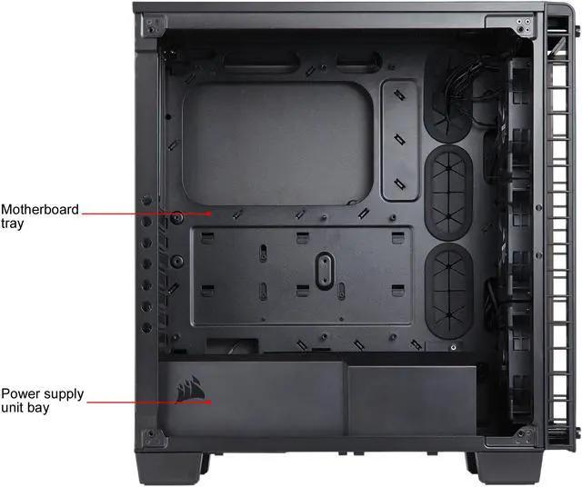
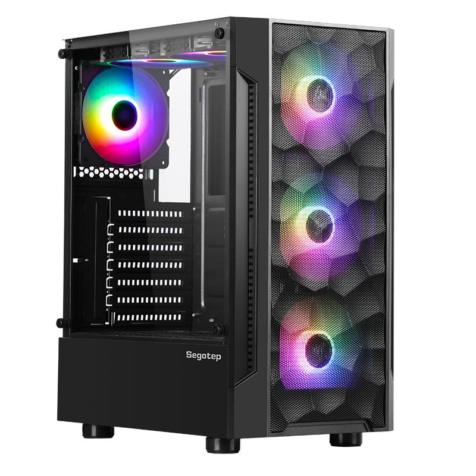
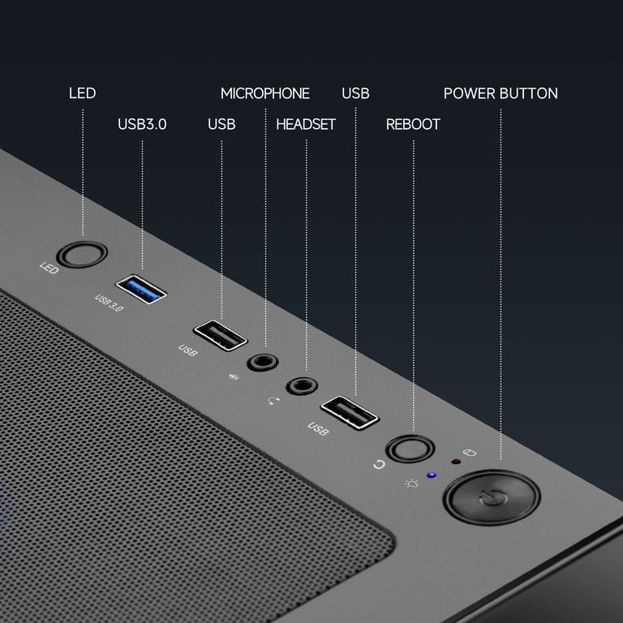
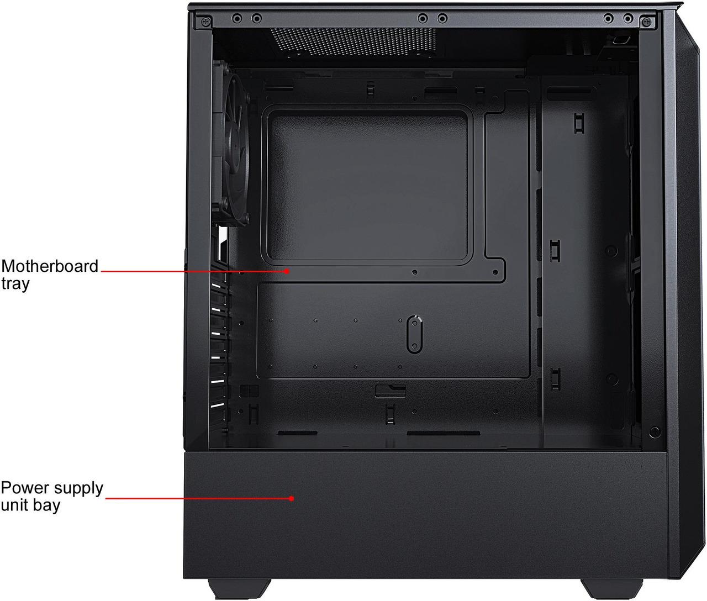
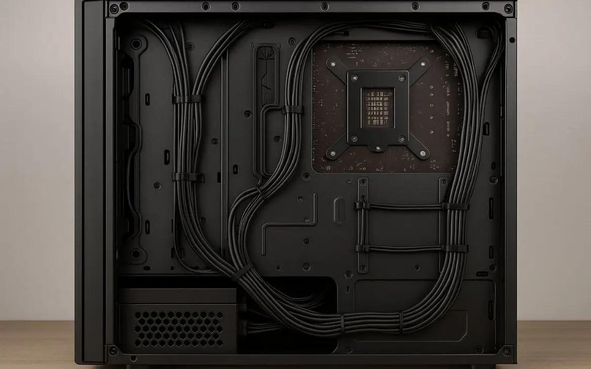
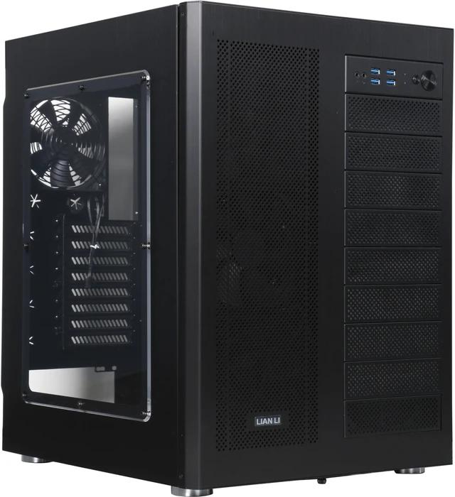
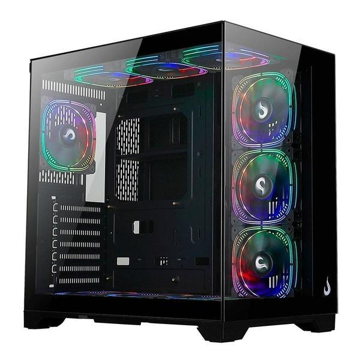
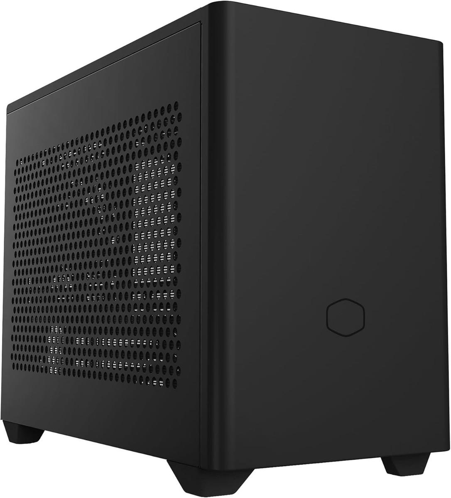

CURATED COLLECTION
電腦外殼
Computer Case
一、什麼是電腦外殼？
電腦外殼（Computer Case），又稱為「電腦機殼」或「主機機殼」，是用來安裝、固定及保護電腦內部硬體零件的設備。
電腦外殼可以容納主機板、電源供應器、顯示卡、硬碟及散熱設備等零件，並提供散熱空間，讓電腦能夠穩定運作。
二、電腦外殼的主要功能
- 保護硬體： 防止電腦內部零件受到碰撞、灰塵及外部異物影響。
- 固定零件： 提供主機板、硬碟、顯示卡及電源供應器的安裝位置。
- 協助散熱： 透過通風孔與散熱風扇，將電腦內部的熱空氣排出。
- 整理線材： 提供電源線及資料線的整理空間，使內部更加整齊。
- 方便使用： 提供電源按鈕、USB 接孔及音源接孔等功能。
- 美化外觀： 具有不同顏色、造型與燈光設計，提升電腦的整體美觀。
三、電腦外殼的主要構造

1. 主機板安裝區
用來固定主機板，使 CPU、記憶體及其他硬體能夠穩定安裝。

2. 散熱風扇與通風孔
幫助冷空氣進入、熱空氣排出，避免電腦內部溫度過高。

3. 前置輸入／輸出面板
通常設有電源按鈕、USB 接孔、耳機孔及麥克風孔，方便使用者連接設備。

4. 電源供應器安裝區
用來固定電源供應器，讓電源線能夠連接各個電腦零件。

5. 硬碟安裝區與整線空間
提供 HDD、SSD 等設備的安裝位置，並讓電源線與資料線能夠整齊排列。
四、電腦外殼的種類

1. 全塔式機殼（Full Tower）
體積較大，內部空間充足，可安裝較多硬體設備，適合高階電腦與工作站。

2. 中塔式機殼（Mid Tower）
最常見的桌上型電腦機殼之一，大小適中，適合一般家用、文書及遊戲電腦。

3. 小型機殼（Mini Tower／Mini-ITX Case）
體積小、節省桌面空間，適合小型電腦，但硬體安裝及擴充空間通常較有限。
五、電腦外殼的常見材質
材質 |
主要特色 |
|---|---|
鋼板 |
堅固耐用，價格通常較便宜 |
鋁合金 |
重量較輕，外觀具有質感 |
塑膠 |
常用於前面板及裝飾部分 |
強化玻璃 |
可展示內部硬體及 RGB 燈光 |
六、選購電腦外殼的注意事項
選購電腦外殼時，需要注意以下幾個重點：
- 主機板相容性： 確認機殼是否支援 ATX、Micro-ATX 或 Mini-ITX 主機板。
- 內部空間： 確認顯示卡長度、CPU 散熱器高度及電源供應器尺寸是否符合機殼規格。
- 散熱效果： 選擇具有良好通風孔及風扇安裝位置的機殼。
- 擴充能力： 確認是否有足夠的硬碟安裝位置與擴充插槽。
- 外觀設計： 可以依照個人喜好選擇顏色、燈光及透明側板。
- 清潔便利性： 具備可拆式防塵濾網的機殼通常較方便清理。
七、電腦外殼的優點與重要性
電腦外殼除了保護硬體，也會影響電腦的散熱能力、噪音、擴充性及維修便利性。
如果機殼的通風設計不良，可能導致內部溫度過高，影響電腦的效能與穩定性。
因此，良好的機殼設計能幫助硬體正常運作，也能讓日後的清潔、維修及升級更加方便。
八、總結
電腦外殼是用來安裝與保護電腦內部零件的重要設備，能夠固定各項硬體、協助散熱、整理線材，並提供方便的外部連接介面。
電腦外殼就像是電腦的「房子」，讓所有硬體都有適當的位置，同時提供保護與良好的運作環境。
簡單來說：電腦外殼負責「保護硬體、固定零件、協助散熱」，是組成桌上型電腦的重要部分。